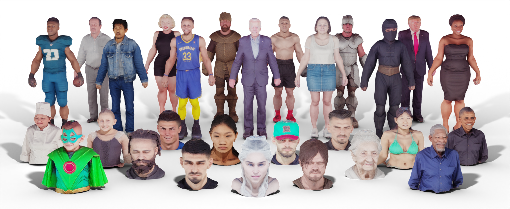

HumanNorm: Learning Normal Diffusion Model for High-quality and Realistic 3D Human Generation

Methodology
Our method is designed for high-quality and realistic 3D human generation from given prompts. The whole framework consists of geometry and texture generation. We first propose the normal-adapted and depth-adapted diffusion model for the geometry generation. These two models can guide the rendered normal and depth maps to approach the learned distribution of high-fidelity normal and depth maps through the SDS loss, thereby achieving high-quality geometry generation. In terms of texture generation, we introduce the normal-aligned diffusion model. The normal-aligned diffusion model leverages normal maps as guiding cues to ensure the alignment of the generated texture with geometry. We first exclusively employ the SDS loss and then incorporate the multi-step SDS and perceptual loss to achieve realistic texture generation.

Results -- Head Only & Upper Body
We showcase 3D humans generated by our method, which include full-body, upper-body, and head-only models.
Results -- Full Body
Comparisons with Text-to-3D Content Methods
Comparisons with Text-to-3D Human Methods
Applications -- Text-based Editing
HumanNorm offers the capability to edit both the texture and geometry of the generated 3D humans by adjusting the input prompt.
Applications -- 3D Animation
HumanNorm enables the creation of lifelike human mesh featuring about 400K distinct faces and intricate 2K-resolution texture map. Based on the high-quality models, we can animate them using full-body motion sequences. Explore our gallery for more generated models.
View human model in MeshLab (Shading: None)

2K-resolution texture map
Animation Results
Applications -- Pose Editing
HumanNorm also provides the ability to edit the pose of generated 3D humans by adjusting the pose of the mesh used for initialization and modifying the prompts.
a photo of Elon Musk with his hands on his hip
a photo of Elon Musk raising a hand
Ethics Statement
The objective of HumanNorm is to equip users with a powerful tool for creating realistic 3D Human models. Our method allows users to generate 3D Humans based on their specific prompts. However, there is a potential risk that these generated models could be misused to deceive viewers. This problem is not unique to our approach but is prevalent in other generative model methodologies. Moreover, it is of paramount importance to give precedence to diversity in terms of gender, race, and culture. As such, it is absolutely essential for current and future research in the field of generative modeling to consistently address and reassess these considerations.
Citation
@article{humannorm2023,
title={HumanNorm: Learning Normal Diffusion Model for High-quality and Realistic 3D Human Generation},
author={Huang, Xin and Shao, Ruizhi and Zhang, Qi and Zhang, Hongwen and Feng, Ying and Liu, Yebin and Wang, Qing},
journal={arXiv},
year={2023}
}